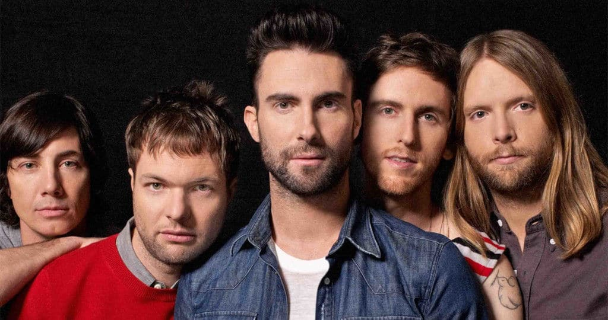

Maroon 5
Banda musical de pop rock formada en 1995 en Los Ángeles, California

Integrantes del grupo
Adam Levine
James Valentine
Jesse Carmichael
PJ Morton
Matt Flynn
Sam Farrar
Mickey Madden
Discografía
Grandes éxitos de Maroon 5
Año
Disco
2002
Songs About Jane
2007
It Won´t Be Soon Befor Long
2010
Hands All Over
"Songs About Jane" fue el álbum más exitoso
Sitio web
www.maroon5.com